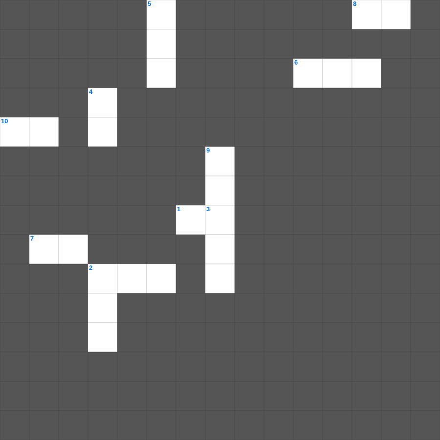

민수기: 광야의 인구조사
📌 서비스 정의
십자가로세로는 교회 주보와 주일학교에서 사용할 수 있는 성경 기반 가로세로 퍼즐 서비스입니다. 성경 인물, 사건, 핵심 구절을 바탕으로 제작되었습니다. 온라인 풀이 및 인쇄 기능을 제공합니다.
📖 민수기란?
민수기는 시내산을 출발한 이스라엘이 가나안 입성 직전까지 겪은 광야 40년의 여정을 기록합니다. 인구 조사, 지파별 역할, 불순종과 심판, 그리고 새 세대의 준비가 핵심 내용입니다. 총 36장입니다.
📚 민수기의 주요 사건·주제
두 차례의 인구 조사 · 열두 정탐꾼 사건 · 고라의 반역 · 발람과 발락 이야기 · 모압 평지의 마지막 준비
무료로 즐기는 민수기 민수기 성경 퀴즈 문제! 11개의 힌트로 구성된 가로세로 낱말 퍼즐입니다. PC와 모바일 모두 지원되며, 정답을 바로 확인할 수 있어 혼자서도 쉽게 풀 수 있습니다.

📝 가로 힌트
1. 하나님이 세상을 창조하신 기간(일)
2. 광야에서 머문 기간
6. 성막을 메고 운반하는 지파
7. 백성이 원망하며 돌아가려 한 곳
8. 장대에 높이 단 뱀
10. 원망하는 백성을 문 동물
📝 세로 힌트
2. 이스라엘이 광야에서 보낸 시간(년)
3. 용서할 때 일흔 번씩 몇 번까지?
4. 정탐꾼이 메고 온 과일
5. 모세가 반석을 쳐서 물을 낸 곳
9. 예수님이 광야에서 시험받으신 기간
📖 함께 읽으면 좋은 성경사전
퍼즐을 풀기 전에 읽으면 힌트가 쉬워지고, 풀고 나서 읽으면 내용을 한 번 더 복습할 수 있습니다.
🧩 이 퍼즐에서 배우는 내용
이 퍼즐은 민수기: 광야의 인구조사의 핵심 단어와 개념을 자연스럽게 복습할 수 있도록 구성되었습니다. 주일학교 수업이나 개인 성경공부에서 학습 내용을 점검하는 용도로 바로 활용할 수 있습니다.
🧑🏫 교회 교육 자료 활용
이 퍼즐은 주일학교 교재 추천 자료로 활용할 수 있고, 주일학교 주보에 넣기 좋은 분량으로 구성되어 있습니다. 수업용 주일학교 교안에 활동지로 붙이거나, 예배 후 복습용 주일학교 공과교재로 바로 사용할 수 있습니다.
🏷️ 키워드
민수기 성경 퀴즈 문제, 민수기, 십자가로세로, 성경퀴즈, 말씀퀴즈, 가로세로퍼즐, 주일학교 교재 추천, 주일학교 주보, 주일학교 교안, 주일학교 공과교재